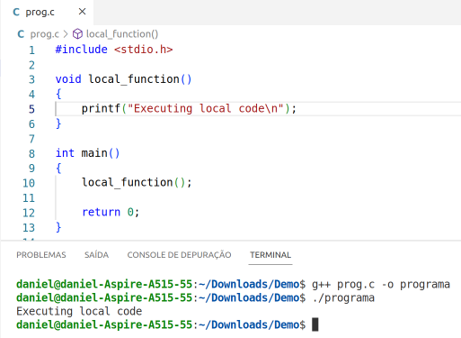

Sobre mim

Daniel Sucupira Lima
Foto tirada no campus da Universidade Estadual do Ceará, na frente do prédio do PPGCC.
Eu sou Daniel Sucupira Lima. Sou mestre em Ciência da Computação pelo Mestrado Acadêmico em Ciência da Computação da Universidade Estadual do Ceará (MACC/UECE), graduado em Ciência da Computação pela Universidade Estadual do Ceará (UECE) e graduado em Engenharia de Computação pelo Instituto Federal de Educação, Ciência e Tecnologia do Ceará (IFCE).
Agenda
- Introdução;
- Fundamentação teórica;
- Instalação;
- Exemplos práticos:
- Exemplo 1: Exibe 1
- Exemplo 2: Exibe 2
- Exemplo 3: Pergunta
- Exemplo 4: Quadrado
- Exemplo 5: Soma
- Exemplo 6: Calculadora
- Exemplo 7: Operação
- Conclusão;
- Referências.
Introdução
- Uma das práticas mais comuns em programas é a criação de funções;
-
Elas têm como características:
- Modularização de código;
- Evitar duplicação de código;
- Com alterações em um único local pode-se resolver problemas em diversas partes do código;
- Dentre outros.
- O comportamento dessa função é completamente definido no programa principal ou bibliotecas.
- A Figura a seguir ilustra um programa principal com uma outra função local: 
- Cada programa, na memória principal, tem regiões. Isso é ilustrado na Figura abaixo:
- Funções tem endereços;
- Blocos tem limites
- A Figura a seguir ilustra endereços de funções e limites dos blocos:
- Em alguns casos, o código a ser chamado não está na máquina local;
- Exemplos:
- Obter um status de um serviço;
- Ativar determinado recurso;
- Executar um cálculo e obter o resultado;
- Executar uma transformação sobre dados locais (após upload) e baixar os resultados (com download).
- Pode-se usar, por exemplo, o modelo cliente/servidor;
- Deve-se criar um protocolo para essa comunicação;
- Deve-se fazer sockets para as trocas de mensagens;
- Deve-se empacotar/desempacotar parâmetros/resultados;
- Dentre outros.
- Seria interessante houvesse uma forma de simplificar essa comunicação entre clientes e servidores, facilitando as chamadas a métodos em outras máquinas.
- Existe uma forma de facilitar essa comunicação: RCP
- A figura abaixo ilustra o RPC em linhas gerais:
- Os autores Stephanie Wang, Benjamin Hindman e Ion Stoica escrevem o seguinte sobre RPC: "A chave por trás do sucesso do RPC é a semântica simples, mas poderosa, de seu modelo de programação".

Fundamentação teórica
- O RPC permite a chamada à procedimentos remotos;
- Ele cria uma interface simples e elegante para essa chamada;
- Essa interface é feita através dos stubs;
- Existe um stub para o cliente e outro para o servidor.
- A Figura a seguir ilustra os stubs:
- Observe que os stubs recebem os dados da camada superior como parâmetros e monta uma mensagem a ser enviada como cadeia de bytes;
- Esse processo de empacotamento é chamado de Marshalling ou packaging;
- Observe ainda que os stubs devem entregar dados para a camada superior como parâmetros, desmontando uma mensagem que veio como cadeia de bytes;
- Esse processo de desempacotamento é chamado de unmarshalling ou unpacking.
- A Figura a seguir ilustra os empacotamentos e desempacotamentos:
Instalação
- Exibe-se neste trabalho como instalar duas versões do RPC a serem usadas pela linguagem de programação C;
- Dependendo do sistema operacional e da sua versão os procedimentos mudam;
- Características da máquina:
- Sistema operacional: Ubuntu;
- Versão: Ubuntu 22.04.2 LTS - Jammy Jellyfish;
- Tipo: 64 bits.
- Passo 1 da instalação:
- As novas versões de ubuntu não tem, por padrão, as ferramentas essenciais de compilação de programas C/C++;
- Caso sua máquina não tenha, instale-as.
- Passo 2 da instalação:
- Verifique se sua máquina já tem as ferramentas de RPC.
- Como minha máquina ainda não tinha, eu instalei.
- Verifique a instalação.
Exemplos práticos
- Em cada um dos exemplos deve-se criar o arquivo que definirá:
- Funções a serem chamadas;
- Estruturas de dados a serem usadas;
- Versões das definições;
- Esse arquivo tem a extensão .x.
- Exemplo 1: Exibe 1:
- Exemplo 2: Exibe 2:
- Exemplo 3: Pergunta:
- Exemplo 4: Quadrado:
- Exemplo 5: Soma:
- Exemplo 6: Calculadora:
- Exemplo 7: Operação:
Conclusão
Texto de Conclusão.
Referências
Texto de Referências.